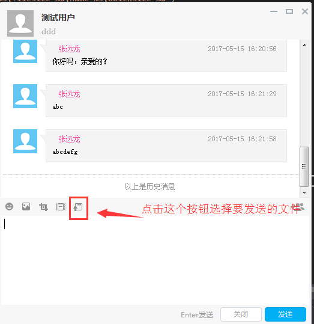
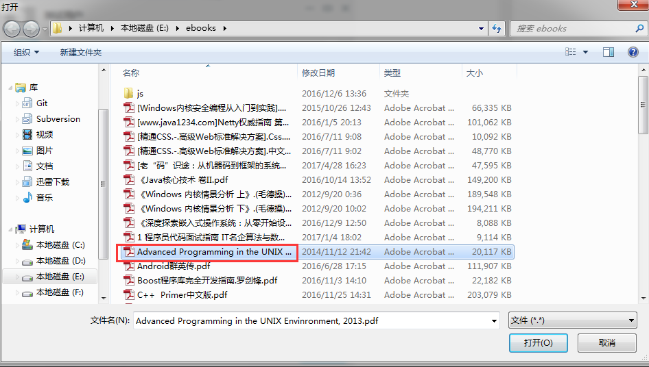
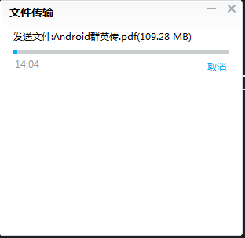

08 服务器端file_server源码分析
这篇文章我们来介绍file_server服务的功能和源码实现。TeamTalk支持离线在线文件和离线文件两种传送文件的方式。单纯地研究file_server的程序结构没多大意义，因为其程序结构和其他几个服务结构基本上一模一样，前面几篇文章已经介绍过了。 我们研究teamtalk的file_server是为了学习和借鉴teamtalk的文件传输功能实现思路，以内化为自己的知识，并加以应用。
所以这篇文章，我们将pc客户端的文件传输功能、msg_server转发消息、file_server处理文件数据三个方面结合起来一起介绍。
下面开始啦。


一、连接状况介绍
fileserver开始并不是和客户端连接的，客户端是按需连接file_server的。但是file_server与msg_server却是长连接。先启动file_server，再启动msg_server。msg_server初始化的时候，会去尝试连接file_server的8601端口。连接成功以后，会给file_server发送一个发包询问file_server侦听客户端连接的ip和端口号信息：
void CFileServConn::OnConfirm()
{
log("connect to file server success ");
m_bOpen = true;
m_connect_time = get_tick_count();
g_file_server_list[m_serv_idx].reconnect_cnt = MIN_RECONNECT_CNT / 2;
//连上file_server以后，给file_server发送获取ip地址的数据包
IM::Server::IMFileServerIPReq msg;
CImPdu pdu;
pdu.SetPBMsg(&msg);
pdu.SetServiceId(SID_OTHER);
pdu.SetCommandId(CID_OTHER_FILE_SERVER_IP_REQ);
SendPdu(&pdu);
}
file_server收到该数据包后，将自己的侦听客户端连接的ip地址和端口号发包告诉msg_server：
void FileMsgServerConn::_HandleGetServerAddressReq(CImPdu* pPdu) {
IM::Server::IMFileServerIPRsp msg;
const std::list<IM::BaseDefine::IpAddr>& addrs = ConfigUtil::GetInstance()->GetAddressList();
for (std::list<IM::BaseDefine::IpAddr>::const_iterator it=addrs.begin(); it!=addrs.end(); ++it) {
IM::BaseDefine::IpAddr* addr = msg.add_ip_addr_list();
*addr = *it;
log("Upload file_client_conn addr info, ip=%s, port=%d", addr->ip().c_str(), addr->port());
}
SendMessageLite(this, SID_OTHER, CID_OTHER_FILE_SERVER_IP_RSP, pPdu->GetSeqNum(), &msg);
}
得到的信息是file_server侦听的ip地址和端口号，默认配置的端口号是8600。也就是说file_server的8600用于客户端连接，8601端口用于msg_server连接。这样，客户端需要传输文件（注意：不是聊天图片，聊天图片使用另外一个服务msfs进行传输），会先告诉msg_server它需要进行文件传输，msg_server收到消息后告诉客户端，你连file_server来传输文件吧，并把file_server的地址和端口号告诉客户端。客户端这个时候连接file_server进行文件传输。我们来具体看一看这个流程的细节信息：
- 客户端发包给msg_server说要进行文件发送

然后选择一个文件：

pc客户端发送文件逻辑：
//pc客户端代码(Modules工程SessionLayout.cpp)
void SessionLayout::Notify(TNotifyUI& msg)
{
...
//省略无关代码
else if (msg.pSender == m_pBtnsendfile) //文件传输
{
module::UserInfoEntity userInfo;
if (!module::getUserListModule()->getUserInfoBySId(m_sId, userInfo))
{
LOG__(ERR, _T("SendFile can't find the sid"));
return;
}
CFileDialog fileDlg(TRUE, NULL, NULL, OFN_HIDEREADONLY | OFN_FILEMUSTEXIST
, _T("文件|*.*||"), AfxGetMainWnd());
fileDlg.m_ofn.Flags |= OFN_NOCHANGEDIR;
fileDlg.DoModal();
CString sPathName;
POSITION nPos = fileDlg.GetStartPosition();
if (nPos != NULL)
{
sPathName = fileDlg.GetNextPathName(nPos);
}
if (sPathName.IsEmpty())
return;
module::getFileTransferModule()->sendFile(sPathName, m_sId, userInfo.isOnlne());
}
...
//省略无关代码
}
sPathName是文件的全饰路径；m_sId是收取文件的用户id，userInfo.isOnlne()判断m_sId代表的用户是否在线，以此来决定这次文件传输是在线文件还是离线文件模式。
BOOL FileTransferModule_Impl::sendFile(IN const CString& sFilePath, IN const std::string& sSendToSID,IN BOOL bOnlineMode)
{
if (TransferFileEntityManager::getInstance()->checkIfIsSending(sFilePath))
{
return FALSE;
}
TransferFileEntity fileEntity;
//获取文件大小
struct __stat64 buffer;
_wstat64(sFilePath, &buffer);
fileEntity.nFileSize = (UInt32)buffer.st_size;
if (0 != fileEntity.nFileSize)
{
CString strFileName = sFilePath;
strFileName.Replace(_T("\\"), _T("/"));//mac上对于路径字符“\”需要做特殊处理，windows上则可以识别
fileEntity.sFileName = util::cStringToString(strFileName);
fileEntity.sFromID = module::getSysConfigModule()->userID();
fileEntity.sToID = sSendToSID;
uint32_t transMode = 0;
transMode = bOnlineMode ? IM::BaseDefine::TransferFileType::FILE_TYPE_ONLINE : IM::BaseDefine::TransferFileType::FILE_TYPE_OFFLINE;
LOG__(DEBG,_T("FileTransferSevice_Impl::sendFile sTaskID = %s"), util::stringToCString(fileEntity.sTaskID));
imcore::IMLibCoreStartOperationWithLambda(
[=]()
{
IM::File::IMFileReq imFileReq;
LOG__(APP, _T("imFileReq,name=%s,size=%d,toId=%s"),util::stringToCString(fileEntity.sFileName)
,fileEntity.nFileSize,util::stringToCString(fileEntity.sToID));
imFileReq.set_from_user_id(util::stringToInt32(fileEntity.sFromID));
imFileReq.set_to_user_id(util::stringToInt32(fileEntity.sToID));
imFileReq.set_file_name(fileEntity.sFileName);
imFileReq.set_file_size(fileEntity.nFileSize);
imFileReq.set_trans_mode(static_cast<IM::BaseDefine::TransferFileType>(transMode));
module::getTcpClientModule()->sendPacket(IM::BaseDefine::ServiceID::SID_FILE
, IM::BaseDefine::FileCmdID::CID_FILE_REQUEST
, &imFileReq);
});
return TRUE;
}
LOG__(ERR, _T("fileEntity FileSize error,size = %d"), fileEntity.nFileSize);
return FALSE;
}
上面代码中组装的包信息中含有要传输的文件路径、文件大小、发送人id、接收方id、文件传输模式（在线还是离线），包的命令号是IM::BaseDefine::FileCmdID::CID_FILE_REQUEST。这个包发给msg_server以后，msg_server应答：
void CMsgConn::HandlePdu(CImPdu* pPdu)
{
...
//省略无关代码
case CID_FILE_REQUEST:
s_file_handler->HandleClientFileRequest(this, pPdu);
break;
...
//省略无关代码
}
void CFileHandler::HandleClientFileRequest(CMsgConn* pMsgConn, CImPdu* pPdu)
{
IM::File::IMFileReq msg;
CHECK_PB_PARSE_MSG(msg.ParseFromArray(pPdu->GetBodyData(), pPdu->GetBodyLength()));
uint32_t from_id = pMsgConn->GetUserId();
uint32_t to_id = msg.to_user_id();
string file_name = msg.file_name();
uint32_t file_size = msg.file_size();
uint32_t trans_mode = msg.trans_mode();
log("HandleClientFileRequest, %u->%u, fileName: %s, trans_mode: %u.", from_id, to_id, file_name.c_str(), trans_mode);
CDbAttachData attach(ATTACH_TYPE_HANDLE, pMsgConn->GetHandle());
CFileServConn* pFileConn = get_random_file_serv_conn();
if (pFileConn)
{
IM::Server::IMFileTransferReq msg2;
msg2.set_from_user_id(from_id);
msg2.set_to_user_id(to_id);
msg2.set_file_name(file_name);
msg2.set_file_size(file_size);
msg2.set_trans_mode((IM::BaseDefine::TransferFileType)trans_mode);
msg2.set_attach_data(attach.GetBuffer(), attach.GetLength());
CImPdu pdu;
pdu.SetPBMsg(&msg2);
pdu.SetServiceId(SID_OTHER);
pdu.SetCommandId(CID_OTHER_FILE_TRANSFER_REQ);
pdu.SetSeqNum(pPdu->GetSeqNum());
if (IM::BaseDefine::FILE_TYPE_OFFLINE == trans_mode)
{
pFileConn->SendPdu(&pdu);
}
else //IM::BaseDefine::FILE_TYPE_ONLINE
{
CImUser* pUser = CImUserManager::GetInstance()->GetImUserById(to_id);
if (pUser && pUser->GetPCLoginStatus())//已有对应的账号pc登录状态
{
pFileConn->SendPdu(&pdu);
}
else//无对应用户的pc登录状态,向route_server查询状态
{
//no pc_client in this msg_server, check it from route_server
CPduAttachData attach_data(ATTACH_TYPE_HANDLE_AND_PDU_FOR_FILE, pMsgConn->GetHandle(), pdu.GetBodyLength(), pdu.GetBodyData());
IM::Buddy::IMUsersStatReq msg3;
msg3.set_user_id(from_id);
msg3.add_user_id_list(to_id);
msg3.set_attach_data(attach_data.GetBuffer(), attach_data.GetLength());
CImPdu pdu2;
pdu2.SetPBMsg(&msg3);
pdu2.SetServiceId(SID_BUDDY_LIST);
pdu2.SetCommandId(CID_BUDDY_LIST_USERS_STATUS_REQUEST);
pdu2.SetSeqNum(pPdu->GetSeqNum());
CRouteServConn* route_conn = get_route_serv_conn();
if (route_conn)
{
route_conn->SendPdu(&pdu2);
}
}
}
}
else
{
log("HandleClientFileRequest, no file server. ");
IM::File::IMFileRsp msg2;
msg2.set_result_code(1);
msg2.set_from_user_id(from_id);
msg2.set_to_user_id(to_id);
msg2.set_file_name(file_name);
msg2.set_task_id("");
msg2.set_trans_mode((IM::BaseDefine::TransferFileType)trans_mode);
CImPdu pdu;
pdu.SetPBMsg(&msg2);
pdu.SetServiceId(SID_FILE);
pdu.SetCommandId(CID_FILE_RESPONSE);
pdu.SetSeqNum(pPdu->GetSeqNum());
pMsgConn->SendPdu(&pdu);
}
}
这段代码，很有讲究，msg_server会检测file_server是否已经启动，如果没有启动，则直接发包告诉客户端，file_server不存在。另外，如果该文件传输模式是在线文件，会判断接收文件的用户是否和发送用户在同一台msg_server上。不在的话，则给route_server发送消息，查找该用户所在的msg_server（这个不具体介绍了，后面分析route_server会专门介绍的）。否则，会将文件发送请求转发给file_server，包的命令号是CID_OTHER_FILE_TRANSFER_REQ。file_server收到该请求后，处理如下：
void FileMsgServerConn::HandlePdu(CImPdu* pdu) {
...
//省略无关代码
case CID_OTHER_FILE_TRANSFER_REQ:
_HandleMsgFileTransferReq(pdu);
break ;
...
//省略无关代码
}
void FileMsgServerConn::_HandleMsgFileTransferReq(CImPdu* pdu) {
IM::Server::IMFileTransferReq transfer_req;
CHECK_PB_PARSE_MSG(transfer_req.ParseFromArray(pdu->GetBodyData(), pdu->GetBodyLength()));
uint32_t from_id = transfer_req.from_user_id();
uint32_t to_id = transfer_req.to_user_id();
IM::Server::IMFileTransferRsp transfer_rsp;
transfer_rsp.set_result_code(1);
transfer_rsp.set_from_user_id(from_id);
transfer_rsp.set_to_user_id(to_id);
transfer_rsp.set_file_name(transfer_req.file_name());
transfer_rsp.set_file_size(transfer_req.file_size());
transfer_rsp.set_task_id("");
transfer_rsp.set_trans_mode(transfer_req.trans_mode());
transfer_rsp.set_attach_data(transfer_req.attach_data());
bool rv = false;
do {
std::string task_id = GenerateUUID();
if (task_id.empty()) {
log("Create task id failed");
break;
}
log("trams_mode=%d, task_id=%s, from_id=%d, to_id=%d, file_name=%s, file_size=%d", transfer_req.trans_mode(), task_id.c_str(), from_id, to_id, transfer_req.file_name().c_str(), transfer_req.file_size());
BaseTransferTask* transfer_task = TransferTaskManager::GetInstance()->NewTransferTask(
transfer_req.trans_mode(),
task_id,
from_id,
to_id,
transfer_req.file_name(),
transfer_req.file_size());
if (transfer_task == NULL) {
// 创建未成功
// close connection with msg svr
// need_close = true;
log("Create task failed");
break;
}
transfer_rsp.set_result_code(0);
transfer_rsp.set_task_id(task_id);
rv = true;
// need_seq_no = false;
log("Create task succeed, task id %s, task type %d, from user %d, to user %d", task_id.c_str(), transfer_req.trans_mode(), from_id, to_id);
} while (0);
::SendMessageLite(this, SID_OTHER, CID_OTHER_FILE_TRANSFER_RSP, pdu->GetSeqNum(), &transfer_rsp);
if (!rv) {
// 未创建成功，关闭连接
Close();
}
}
上述代码会为本次传输任务创建一个唯一的标识uuid作为taskid，然后根据离线文件还是在线文件创建离线文件传输任务OfflineTransferTask或者在线文件传输任务OnlineTransferTask，并加入一个一个成员变量transfertasks中进行管理：
BaseTransferTask* TransferTaskManager::NewTransferTask(uint32_t trans_mode, const std::string& task_id, uint32_t from_user_id, uint32_t to_user_id, const std::string& file_name, uint32_t file_size) {
BaseTransferTask* transfer_task = NULL;
TransferTaskMap::iterator it = transfer_tasks_.find(task_id);
if (it==transfer_tasks_.end()) {
if (trans_mode == IM::BaseDefine::FILE_TYPE_ONLINE) {
transfer_task = new OnlineTransferTask(task_id, from_user_id, to_user_id, file_name, file_size);
} else if (trans_mode == IM::BaseDefine::FILE_TYPE_OFFLINE) {
transfer_task = new OfflineTransferTask(task_id, from_user_id, to_user_id, file_name, file_size);
} else {
log("Invalid trans_mode = %d", trans_mode);
}
if (transfer_task) {
transfer_tasks_.insert(std::make_pair(task_id, transfer_task));
}
} else {
log("Task existed by task_id=%s, why?????", task_id.c_str());
}
return transfer_task;
}
这个map transfertasks是在定时器里面进行定期处理的，处理的依据是当前任务的状态，比如已经完成的任务就可以从map中移除了：
void TransferTaskManager::OnTimer(uint64_t tick) {
for (TransferTaskMap::iterator it = transfer_tasks_.begin(); it != transfer_tasks_.end();) {
BaseTransferTask* task = it->second;
if (task == NULL) {
transfer_tasks_.erase(it++);
continue;
}
if (task->state() != kTransferTaskStateWaitingUpload &&
task->state() == kTransferTaskStateTransferDone) {
long esp = time(NULL) - task->create_time();
if (esp > ConfigUtil::GetInstance()->GetTaskTimeout()) {
if (task->GetFromConn()) {
FileClientConn* conn = reinterpret_cast<FileClientConn*>(task->GetFromConn());
conn->ClearTransferTask();
}
if (task->GetToConn()) {
FileClientConn* conn = reinterpret_cast<FileClientConn*>(task->GetToConn());
conn->ClearTransferTask();
}
delete task;
transfer_tasks_.erase(it++);
continue;
}
}
++it;
}
}
完成这些工作以后，组装的应答包命令号是CID_OTHER_FILE_TRANSFER_RSP，回复给msg_server。msg_server收到该应答包后处理：
void CFileServConn::HandlePdu(CImPdu* pPdu)
{
switch (pPdu->GetCommandId()) {
...
//省略无关代码
case CID_OTHER_FILE_TRANSFER_RSP:
_HandleFileMsgTransRsp(pPdu);
break;
...
//省略无关代码
}
}
void CFileServConn::_HandleFileMsgTransRsp(CImPdu* pPdu)
{
IM::Server::IMFileTransferRsp msg;
CHECK_PB_PARSE_MSG(msg.ParseFromArray(pPdu->GetBodyData(), pPdu->GetBodyLength()));
uint32_t result = msg.result_code();
uint32_t from_id = msg.from_user_id();
uint32_t to_id = msg.to_user_id();
string file_name = msg.file_name();
uint32_t file_size = msg.file_size();
string task_id = msg.task_id();
uint32_t trans_mode = msg.trans_mode();
CDbAttachData attach((uchar_t*)msg.attach_data().c_str(), msg.attach_data().length());
log("HandleFileMsgTransRsp, result: %u, from_user_id: %u, to_user_id: %u, file_name: %s, \
task_id: %s, trans_mode: %u. ", result, from_id, to_id,
file_name.c_str(), task_id.c_str(), trans_mode);
const list<IM::BaseDefine::IpAddr>* ip_addr_list = GetFileServerIPList();
IM::File::IMFileRsp msg2;
msg2.set_result_code(result);
msg2.set_from_user_id(from_id);
msg2.set_to_user_id(to_id);
msg2.set_file_name(file_name);
msg2.set_task_id(task_id);
msg2.set_trans_mode((IM::BaseDefine::TransferFileType)trans_mode);
for (list<IM::BaseDefine::IpAddr>::const_iterator it = ip_addr_list->begin(); it != ip_addr_list->end(); it++)
{
IM::BaseDefine::IpAddr ip_addr_tmp = *it;
IM::BaseDefine::IpAddr* ip_addr = msg2.add_ip_addr_list();
ip_addr->set_ip(ip_addr_tmp.ip());
ip_addr->set_port(ip_addr_tmp.port());
}
CImPdu pdu;
pdu.SetPBMsg(&msg2);
pdu.SetServiceId(SID_FILE);
pdu.SetCommandId(CID_FILE_RESPONSE);
pdu.SetSeqNum(pPdu->GetSeqNum());
uint32_t handle = attach.GetHandle();
CMsgConn* pFromConn = CImUserManager::GetInstance()->GetMsgConnByHandle(from_id, handle);
if (pFromConn)
{
pFromConn->SendPdu(&pdu);
}
if (result == 0)
{
IM::File::IMFileNotify msg3;
msg3.set_from_user_id(from_id);
msg3.set_to_user_id(to_id);
msg3.set_file_name(file_name);
msg3.set_file_size(file_size);
msg3.set_task_id(task_id);
msg3.set_trans_mode((IM::BaseDefine::TransferFileType)trans_mode);
msg3.set_offline_ready(0);
for (list<IM::BaseDefine::IpAddr>::const_iterator it = ip_addr_list->begin(); it != ip_addr_list->end(); it++)
{
IM::BaseDefine::IpAddr ip_addr_tmp = *it;
IM::BaseDefine::IpAddr* ip_addr = msg3.add_ip_addr_list();
ip_addr->set_ip(ip_addr_tmp.ip());
ip_addr->set_port(ip_addr_tmp.port());
}
CImPdu pdu2;
pdu2.SetPBMsg(&msg3);
pdu2.SetServiceId(SID_FILE);
pdu2.SetCommandId(CID_FILE_NOTIFY);
//send notify to target user
CImUser* pToUser = CImUserManager::GetInstance()->GetImUserById(to_id);
if (pToUser)
{
pToUser->BroadcastPduWithOutMobile(&pdu2);
}
//send to route server
CRouteServConn* pRouteConn = get_route_serv_conn();
if (pRouteConn) {
pRouteConn->SendPdu(&pdu2);
}
}
}
msg_server收到包后，首先装包数据，并把file_server的ip地址和端口信息带上，发给请求发文件的客户端，命令号是CID_FILE_RESPONSE；接着查询通知接收方有人给其发文件（通知方式也是一样，如果接收方在该msg_server上，直接发给该用户；不在的话，发给路由服务route_server）。当然接收到文件发送的端只有pc端，移动端会被过滤掉的，也就是说移动端不会收到发送文件的请求。
我们先看发送方pc客户端收到应答的逻辑（命令号是CID_FILE_RESPONSE）：
void FileTransferModule_Impl::onPacket(imcore::TTPBHeader& header, std::string& pbBody)
{
switch (header.getCommandId())
{
case IM::BaseDefine::FileCmdID::CID_FILE_RESPONSE://发送“文件请求/离线文件”-返回
_sendfileResponse(pbBody);
break;
}
}
void FileTransferModule_Impl::_sendfileResponse(IN std::string& body)
{
IM::File::IMFileRsp imFileRsp;
if (!imFileRsp.ParseFromString(body))
{
LOG__(ERR, _T("parse failed,body:%s"), util::stringToCString(body));
return;
}
UInt32 nResult = imFileRsp.result_code();
if (nResult != 0)
{
LOG__(ERR, _T("_sendfileResponse result != 0"));
module::getFileTransferModule()->asynNotifyObserver(module::KEY_FILESEVER_UPLOAD_FAILED);
}
TransferFileEntity fileEntity;
fileEntity.sTaskID = imFileRsp.task_id();
assert(!fileEntity.sTaskID.empty());
fileEntity.sFromID = util::uint32ToString(imFileRsp.from_user_id());
fileEntity.sToID = util::uint32ToString(imFileRsp.to_user_id());
fileEntity.sFileName = imFileRsp.file_name();
fileEntity.setSaveFilePath(util::stringToCString(fileEntity.sFileName));//发送方文件地址，就是保存地址
fileEntity.time = static_cast<UInt32>(time(0));
uint32_t transMode = imFileRsp.trans_mode();
if (IM::BaseDefine::TransferFileType::FILE_TYPE_ONLINE == transMode)
{
fileEntity.nClientMode = IM::BaseDefine::ClientFileRole::CLIENT_REALTIME_SENDER;
}
else if (IM::BaseDefine::TransferFileType::FILE_TYPE_OFFLINE == transMode)
{
fileEntity.nClientMode = IM::BaseDefine::ClientFileRole::CLIENT_OFFLINE_UPLOAD;
}
fileEntity.pFileObject = new TransferFile(util::stringToCString(fileEntity.sFileName),FALSE);
if (fileEntity.pFileObject)
{
fileEntity.nFileSize = fileEntity.pFileObject->length();
}
UINT32 nIPCount = imFileRsp.ip_addr_list_size();
if (nIPCount <= 0)
{
return;
}
const IM::BaseDefine::IpAddr& ipAdd = imFileRsp.ip_addr_list(0);
fileEntity.sIP = ipAdd.ip();
fileEntity.nPort = ipAdd.port();
if (!TransferFileEntityManager::getInstance()->pushTransferFileEntity(fileEntity))
TransferFileEntityManager::getInstance()->updateFileInfoBysTaskID(fileEntity);
LOG__(DEBG, _T("FileTransferSevice_Impl::准备连接文件服务器 sTaskId = %s"), util::stringToCString(fileEntity.sTaskID));
TransferFileEntityManager::getInstance()->openFileSocketByTaskId(fileEntity.sTaskID);
}
客户端在TransferFileEntityManager::getInstance()->openFileSocketByTaskId(fileEntity.sTaskID);里面实际去连接file_server并尝试发文件：
void TransferFileEntityManager::openFileSocketByTaskId(std::string& taskId)
{
m_fileUIThread->openFileSocketByTaskId(taskId);
}
void FileTransferUIThread::openFileSocketByTaskId(std::string& taskId)
{
FileTransferSocket* pFileSocket = _findFileSocketByTaskId(taskId);
if (!pFileSocket)
{
pFileSocket = new FileTransferSocket(taskId);
m_lstFileTransSockets.push_back(pFileSocket);
assert(m_hWnd);
::PostMessage(m_hWnd, WM_FILE_TRANSFER, 0, (LPARAM)pFileSocket);
}
}
LRESULT _stdcall FileTransferUIThread::_WndProc(HWND hWnd, UINT message, WPARAM wparam, LPARAM lparam)
{
if (WM_FILE_TRANSFER == message)
{
FileTransferSocket* pFileSocket = (FileTransferSocket*)lparam;
pFileSocket->startFileTransLink();
}
return ::DefWindowProc(hWnd, message, wparam, lparam);
}
BOOL FileTransferSocket::startFileTransLink()
{
TransferFileEntity FileInfo;
if (TransferFileEntityManager::getInstance()->getFileInfoByTaskId(m_sTaskId, FileInfo))
{
//大佛：使用msg server 传过来的IP和端口
LOG__(APP, _T("connect IP=%s,Port=%d"), util::stringToCString(FileInfo.sIP), FileInfo.nPort);
connect(util::stringToCString(FileInfo.sIP), FileInfo.nPort);
//connect(util::stringToCString(module::FILETRANSFER_IP), module::FILETRANSFER_PORT);
return TRUE;
}
LOG__(ERR, _T("can't find the TaskId"));
return FALSE;
}
注意，这里只是去连接file_server服务器，连接成功的情况下，会尝试登录文件服务器，登录file_server的命令号是CID_FILE_LOGIN_REQ：
void FileTransferSocket::onConnectDone()
{
LOG__(APP, _T("FileTransferSocket::onConnected()"));
startHeartbeat();
TransferFileEntity info;
if (!TransferFileEntityManager::getInstance()->getFileInfoByTaskId(m_sTaskId, info))
{
LOG__(APP, _T("Can't get the file info,task id:%s"),util::stringToCString(m_sTaskId));
return;
}
//拉模式文件传输，传输taskid、token、client_mode
IM::File::IMFileLoginReq imFileLoginReq;
imFileLoginReq.set_user_id(module::getSysConfigModule()->userId());
imFileLoginReq.set_task_id(info.sTaskID);
imFileLoginReq.set_file_role(static_cast<IM::BaseDefine::ClientFileRole>(info.nClientMode));
LOG__(APP, _T("IMFileLoginReq,sTaskID:%s,nClientMode:%d"), util::stringToCString(info.sTaskID), info.nClientMode);
//send packet
LOG__(APP, _T("IMFileLoginReq,taskId:%s"), util::stringToCString(info.sTaskID));
sendPacket(IM::BaseDefine::ServiceID::SID_FILE, IM::BaseDefine::FileCmdID::CID_FILE_LOGIN_REQ, &imFileLoginReq);
//CImPduClientFileLoginReq pduFileLoginReq(module::getSysConfigModule()->userID().c_str()
// , "", info.sTaskID.c_str(), );
//sendPacket(&pduFileLoginReq);
}
file_server收到该数据包处理如下：
void FileClientConn::HandlePdu(CImPdu* pdu) {
...
//省略无关代码
case CID_FILE_LOGIN_REQ:
_HandleClientFileLoginReq(pdu);
break;
}
void FileClientConn::_HandleClientFileLoginReq(CImPdu* pdu) {
IM::File::IMFileLoginReq login_req;
CHECK_PB_PARSE_MSG(login_req.ParseFromArray(pdu->GetBodyData(), pdu->GetBodyLength()));
uint32_t user_id = login_req.user_id();
string task_id = login_req.task_id();
IM::BaseDefine::ClientFileRole mode = login_req.file_role();
log("Client login, user_id=%d, task_id=%s, file_role=%d", user_id, task_id.c_str(), mode);
BaseTransferTask* transfer_task = NULL;
bool rv = false;
do {
// 查找任务是否存在
transfer_task = TransferTaskManager::GetInstance()->FindByTaskID(task_id);
if (transfer_task == NULL) {
if (mode == CLIENT_OFFLINE_DOWNLOAD) {
// 文件不存在，检查是否是离线下载，有可能是文件服务器重启
// 尝试从磁盘加载
transfer_task = TransferTaskManager::GetInstance()->NewTransferTask(task_id, user_id);
// 需要再次判断是否加载成功
if (transfer_task == NULL) {
log("Find task id failed, user_id=%u, taks_id=%s, mode=%d", user_id, task_id.c_str(), mode);
break;
}
} else {
log("Can't find task_id, user_id=%u, taks_id=%s, mode=%d", user_id, task_id.c_str(), mode);
break;
}
}
// 状态转换
rv = transfer_task->ChangePullState(user_id, mode);
if (!rv) {
// log();
break;
//
}
// Ok
auth_ = true;
transfer_task_ = transfer_task;
user_id_ = user_id;
// 设置conn
transfer_task->SetConnByUserID(user_id, this);
rv = true;
} while (0);
IM::File::IMFileLoginRsp login_rsp;
login_rsp.set_result_code(rv?0:1);
login_rsp.set_task_id(task_id);
::SendMessageLite(this, SID_FILE, CID_FILE_LOGIN_RES, pdu->GetSeqNum(), &login_rsp);
if (rv) {
if (transfer_task->GetTransMode() == FILE_TYPE_ONLINE) {
if (transfer_task->state() == kTransferTaskStateWaitingTransfer) {
CImConn* conn = transfer_task_->GetToConn();
if (conn) {
_StatesNotify(CLIENT_FILE_PEER_READY, task_id, transfer_task_->from_user_id(), conn);
} else {
log("to_conn is close, close me!!!");
Close();
}
// _StatesNotify(CLIENT_FILE_PEER_READY, task_id, user_id, this);
// transfer_task->StatesNotify(CLIENT_FILE_PEER_READY, task_id, user_id_);
}
} else {
if (transfer_task->state() == kTransferTaskStateWaitingUpload) {
OfflineTransferTask* offline = reinterpret_cast<OfflineTransferTask*>(transfer_task);
IM::File::IMFilePullDataReq pull_data_req;
pull_data_req.set_task_id(task_id);
pull_data_req.set_user_id(user_id);
pull_data_req.set_trans_mode(FILE_TYPE_OFFLINE);
pull_data_req.set_offset(0);
pull_data_req.set_data_size(offline->GetNextSegmentBlockSize());
::SendMessageLite(this, SID_FILE, CID_FILE_PULL_DATA_REQ, &pull_data_req);
log("Pull Data Req");
}
}
} else {
Close();
}
}
file_server应答客户端的命令号是CID_FILE_LOGIN_RES，客户端收到该包后处理如下：
void FileTransferSocket::onReceiveData(const char* data, int32_t size)
{
std::string pbBody;
imcore::TTPBHeader pbHeader;
try
{
pbHeader.unSerialize((byte*)data, imcore::HEADER_LENGTH);
pbBody.assign(data + imcore::HEADER_LENGTH, size - imcore::HEADER_LENGTH);
if (IM::BaseDefine::OtherCmdID::CID_OTHER_HEARTBEAT == pbHeader.getCommandId()
&& IM::BaseDefine::ServiceID::SID_OTHER == pbHeader.getModuleId())
return;
}
catch (CPduException e)
{
LOG__(ERR, _T("onPacket CPduException serviceId:%d,commandId:%d,errCode:%d")
, e.GetModuleId(), e.GetCommandId(), e.GetErrorCode());
return;
}
catch (...)
{
LOG__(ERR, _T("FileTransferSocket onPacket unknown exception"));
return;
}
UInt16 ncmdid = pbHeader.getCommandId();
switch (ncmdid)
{
case IM::BaseDefine::FileCmdID::CID_FILE_LOGIN_RES:
_fileLoginResponse(pbBody);
break;
//无关代码省略
}
}
void FileTransferSocket::_fileLoginResponse(IN std::string& body)
{
IM::File::IMFileLoginRsp imFileLoginRsp;
if (!imFileLoginRsp.ParseFromString(body))
{
LOG__(ERR, _T("parse failed,body:%s"), util::stringToCString(body));
return;
}
if (imFileLoginRsp.result_code() != 0)
{
LOG__(ERR, _T("file server login failed! "));
return;
}
//打开文件
std::string taskId = imFileLoginRsp.task_id();
TransferFileEntity fileEntity;
if (!TransferFileEntityManager::getInstance()->getFileInfoByTaskId(taskId, fileEntity))
{
LOG__(ERR, _T("file server login:can't find the fileInfo "));
return;
}
LOG__(APP, _T("IMFileLoginRsp, file server login succeed"));
//提示界面,界面上插入该项
if (IM::BaseDefine::ClientFileRole::CLIENT_REALTIME_SENDER == fileEntity.nClientMode
|| IM::BaseDefine::ClientFileRole::CLIENT_OFFLINE_UPLOAD == fileEntity.nClientMode)
{
module::getFileTransferModule()->asynNotifyObserver(module::KEY_FILETRANSFER_SENDFILE, fileEntity.sTaskID);
}
else if (IM::BaseDefine::ClientFileRole::CLIENT_REALTIME_RECVER == fileEntity.nClientMode
|| IM::BaseDefine::ClientFileRole::CLIENT_OFFLINE_DOWNLOAD == fileEntity.nClientMode)
{
module::getFileTransferModule()->asynNotifyObserver(module::KEY_FILETRANSFER_REQUEST, fileEntity.sTaskID);
}
}
至此，不管是离线文件还是在线文件发送，pc客户端会显示一个文件进度的对话框：

对于在线文件，需要对端同意接收文件的传输，客户端才会读取文件，这个进度条才会发生变化。而对于离线文件，应该会立马读取文件上传文件数据到服务器。可是哪里会触发客户端读取文件并发送的逻辑呢？门道在于file_server在收到登录请求CID_FILE_LOGIN_REQ后，不仅会给客户端发送登录应答数据包CID_FILE_LOGIN_RES。还会根据文件的传输模式，如果是离线文件则会给客户端发送拉取文件的数据包CID_FILE_PULL_DATA_REQ，代码我们已经在上面的FileClientConn::_HandleClientFileLoginReq(CImPdu* pdu)中贴过了，我们再贴一次：
void FileClientConn::_HandleClientFileLoginReq(CImPdu* pdu) {
IM::File::IMFileLoginReq login_req;
CHECK_PB_PARSE_MSG(login_req.ParseFromArray(pdu->GetBodyData(), pdu->GetBodyLength()));
uint32_t user_id = login_req.user_id();
string task_id = login_req.task_id();
IM::BaseDefine::ClientFileRole mode = login_req.file_role();
log("Client login, user_id=%d, task_id=%s, file_role=%d", user_id, task_id.c_str(), mode);
BaseTransferTask* transfer_task = NULL;
bool rv = false;
do {
// 查找任务是否存在
transfer_task = TransferTaskManager::GetInstance()->FindByTaskID(task_id);
if (transfer_task == NULL) {
if (mode == CLIENT_OFFLINE_DOWNLOAD) {
// 文件不存在，检查是否是离线下载，有可能是文件服务器重启
// 尝试从磁盘加载
transfer_task = TransferTaskManager::GetInstance()->NewTransferTask(task_id, user_id);
// 需要再次判断是否加载成功
if (transfer_task == NULL) {
log("Find task id failed, user_id=%u, taks_id=%s, mode=%d", user_id, task_id.c_str(), mode);
break;
}
} else {
log("Can't find task_id, user_id=%u, taks_id=%s, mode=%d", user_id, task_id.c_str(), mode);
break;
}
}
// 状态转换
rv = transfer_task->ChangePullState(user_id, mode);
if (!rv) {
// log();
break;
//
}
// Ok
auth_ = true;
transfer_task_ = transfer_task;
user_id_ = user_id;
// 设置conn
transfer_task->SetConnByUserID(user_id, this);
rv = true;
} while (0);
IM::File::IMFileLoginRsp login_rsp;
login_rsp.set_result_code(rv?0:1);
login_rsp.set_task_id(task_id);
::SendMessageLite(this, SID_FILE, CID_FILE_LOGIN_RES, pdu->GetSeqNum(), &login_rsp);
if (rv) {
if (transfer_task->GetTransMode() == FILE_TYPE_ONLINE) {
if (transfer_task->state() == kTransferTaskStateWaitingTransfer) {
CImConn* conn = transfer_task_->GetToConn();
if (conn) {
_StatesNotify(CLIENT_FILE_PEER_READY, task_id, transfer_task_->from_user_id(), conn);
} else {
log("to_conn is close, close me!!!");
Close();
}
// _StatesNotify(CLIENT_FILE_PEER_READY, task_id, user_id, this);
// transfer_task->StatesNotify(CLIENT_FILE_PEER_READY, task_id, user_id_);
}
} else {
if (transfer_task->state() == kTransferTaskStateWaitingUpload) {
OfflineTransferTask* offline = reinterpret_cast<OfflineTransferTask*>(transfer_task);
IM::File::IMFilePullDataReq pull_data_req;
pull_data_req.set_task_id(task_id);
pull_data_req.set_user_id(user_id);
pull_data_req.set_trans_mode(FILE_TYPE_OFFLINE);
pull_data_req.set_offset(0);
pull_data_req.set_data_size(offline->GetNextSegmentBlockSize());
::SendMessageLite(this, SID_FILE, CID_FILE_PULL_DATA_REQ, &pull_data_req);
log("Pull Data Req");
}
}
} else {
Close();
}
}
pc端收到CID_FILE_PULL_DATA_REQ后，表示这是一个离线文件，就可以直接上传文件数据了：
case IM::BaseDefine::FileCmdID::CID_FILE_PULL_DATA_REQ://发文件
_filePullDataReqResponse(pbBody);
void FileTransferSocket::_filePullDataReqResponse(IN std::string& body)//发
{
IM::File::IMFilePullDataReq imFilePullDataReq;
if (!imFilePullDataReq.ParseFromString(body))
{
LOG__(ERR, _T("parse failed,body:%s"), util::stringToCString(body));
return;
}
UInt32 fileSize = imFilePullDataReq.data_size();
UInt32 fileOffset = imFilePullDataReq.offset();
std::string taskId = imFilePullDataReq.task_id();
TransferFileEntity fileEntity;
if (!TransferFileEntityManager::getInstance()->getFileInfoByTaskId(taskId, fileEntity))
{
LOG__(ERR, _T("PullDataReqResponse: can't find the fileInfo"));
return;
}
LOG__(DEBG, _T("send:taskId=%s,filesize=%d,name=%s,BolckSize=%d")
,util::stringToCString(fileEntity.sTaskID)
,fileEntity.nFileSize
,fileEntity.getRealFileName()
,fileSize);
std::string buff;
if (nullptr == fileEntity.pFileObject)
{
LOG__(ERR, _T("PullDataReqResponse: file boject Destoryed!"));
return;
}
fileEntity.pFileObject->readBlock(fileOffset, fileSize, buff);//读取本地文件的数据块
IM::File::IMFilePullDataRsp imFilePullDataRsp;//todo check
imFilePullDataRsp.set_result_code(0);
imFilePullDataRsp.set_task_id(taskId);
imFilePullDataRsp.set_user_id(util::stringToInt32(fileEntity.sFromID));
imFilePullDataRsp.set_offset(fileOffset);
imFilePullDataRsp.set_file_data((void*)buff.data(), fileSize);
//send packet
sendPacket(IM::BaseDefine::ServiceID::SID_FILE, IM::BaseDefine::FileCmdID::CID_FILE_PULL_DATA_RSP
, &imFilePullDataRsp);
fileEntity.nProgress = fileOffset + fileSize;
if (fileEntity.nProgress < fileEntity.nFileSize)
{
//更新进度条
TransferFileEntityManager::getInstance()->updateFileInfoBysTaskID(fileEntity);//保存当前进度
module::getFileTransferModule()->asynNotifyObserver(module::KEY_FILESEVER_UPDATA_PROGRESSBAR
, fileEntity.sTaskID);
}
else//传输完成
{
if (fileEntity.pFileObject)
{
delete fileEntity.pFileObject;
fileEntity.pFileObject = nullptr;
}
module::getFileTransferModule()->asynNotifyObserver(module::KEY_FILESEVER_PROGRESSBAR_FINISHED
, fileEntity.sTaskID);
}
TransferFileEntityManager::getInstance()->updateFileInfoBysTaskID(fileEntity);
}
当然，如果文件比较大，一次发不完也没关系，在CID_FILE_PULL_DATA_REQ中有当前文件的偏移量，客户端在读取文件和应答服务器时也带上这个偏移量fileOffset，应答给服务器的包是CID_FILE_PULL_DATA_RSP。file_server收到应答后处理：
void FileClientConn::HandlePdu(CImPdu* pdu) {
...
//省略无关代码
case CID_FILE_PULL_DATA_RSP:
_HandleClientFilePullFileRsp( pdu);
break ;
...
//省略无关代码
}
void FileClientConn::_HandleClientFilePullFileRsp(CImPdu *pdu) {
if (!auth_ || !transfer_task_) {
log("auth is false");
return;
}
// 只有rsp
IM::File::IMFilePullDataRsp pull_data_rsp;
CHECK_PB_PARSE_MSG(pull_data_rsp.ParseFromArray(pdu->GetBodyData(), pdu->GetBodyLength()));
uint32_t user_id = pull_data_rsp.user_id();
string task_id = pull_data_rsp.task_id();
uint32_t offset = pull_data_rsp.offset();
uint32_t data_size = static_cast<uint32_t>(pull_data_rsp.file_data().length());
const char* data = pull_data_rsp.file_data().data();
// log("Recv FilePullFileRsp, user_id=%d, task_id=%s, file_role=%d, offset=%d, datasize=%d", user_id, task_id.c_str(), mode, offset, datasize);
log("Recv FilePullFileRsp, task_id=%s, user_id=%u, offset=%u, data_size=%d", task_id.c_str(), user_id, offset, data_size);
int rv = -1;
do {
//
// 检查user_id
if (user_id != user_id_) {
log("Received user_id valid, recv_user_id = %d, transfer_task.user_id = %d, user_id_ = %d", user_id, transfer_task_->from_user_id(), user_id_);
break;
}
// 检查task_id
if (transfer_task_->task_id() != task_id) {
log("Received task_id valid, recv_task_id = %s, this_task_id = %s", task_id.c_str(), transfer_task_->task_id().c_str());
// Close();
break;
}
rv = transfer_task_->DoRecvData(user_id, offset, data, data_size);
if (rv == -1) {
break;
}
if (transfer_task_->GetTransMode() == FILE_TYPE_ONLINE) {
// 对于在线，直接转发
OnlineTransferTask* online = reinterpret_cast<OnlineTransferTask*>(transfer_task_);
pdu->SetSeqNum(online->GetSeqNum());
// online->SetSeqNum(pdu->GetSeqNum());
CImConn* conn = transfer_task_->GetToConn();
if (conn) {
conn->SendPdu(pdu);
}
} else {
// 离线
// all packages recved
if (rv == 1) {
_StatesNotify(CLIENT_FILE_DONE, task_id, user_id, this);
// Close();
} else {
OfflineTransferTask* offline = reinterpret_cast<OfflineTransferTask*>(transfer_task_);
IM::File::IMFilePullDataReq pull_data_req;
pull_data_req.set_task_id(task_id);
pull_data_req.set_user_id(user_id);
pull_data_req.set_trans_mode(static_cast<IM::BaseDefine::TransferFileType>(offline->GetTransMode()));
pull_data_req.set_offset(offline->GetNextOffset());
pull_data_req.set_data_size(offline->GetNextSegmentBlockSize());
::SendMessageLite(this, SID_FILE, CID_FILE_PULL_DATA_REQ, &pull_data_req);
// log("size not match");
}
}
} while (0);
if (rv!=0) {
// -1，出错关闭
// 1, 离线上传完成
Close();
}
}
如果是在线文件，就直接转发含有文件数据的包；如果是离线文件，则存入文件服务上，即写入文件：
int OfflineTransferTask::DoRecvData(uint32_t user_id, uint32_t offset, const char* data, uint32_t data_size) {
// 离线文件上传
int rv = -1;
do {
// 检查是否发送者
if (!CheckFromUserID(user_id)) {
log("rsp user_id=%d, but sender_id is %d", user_id, from_user_id_);
break;
}
// 检查状态
if (state_ != kTransferTaskStateWaitingUpload && state_ != kTransferTaskStateUploading) {
log("state=%d error, need kTransferTaskStateWaitingUpload or kTransferTaskStateUploading", state_);
break;
}
// 检查offset是否有效
if (offset != transfered_idx_*SEGMENT_SIZE) {
break;
}
//if (data_size != GetNextSegmentBlockSize()) {
// break;
//}
// todo
// 检查文件大小
data_size = GetNextSegmentBlockSize();
log("Ready recv data, offset=%d, data_size=%d, segment_size=%d", offset, data_size, sengment_size_);
if (state_ == kTransferTaskStateWaitingUpload) {
if (fp_ == NULL) {
fp_ = OpenByWrite(task_id_, to_user_id_);
if (fp_ == NULL) {
break;
}
}
// 写文件头
OfflineFileHeader file_header;
memset(&file_header, 0, sizeof(file_header));
file_header.set_create_time(time(NULL));
file_header.set_task_id(task_id_);
file_header.set_from_user_id(from_user_id_);
file_header.set_to_user_id(to_user_id_);
file_header.set_file_name("");
file_header.set_file_size(file_size_);
fwrite(&file_header, 1, sizeof(file_header), fp_);
fflush(fp_);
state_ = kTransferTaskStateUploading;
}
// 存储
if (fp_ == NULL) {
//
break;
}
fwrite(data, 1, data_size, fp_);
fflush(fp_);
++transfered_idx_;
SetLastUpdateTime();
if (transfered_idx_ == sengment_size_) {
state_ = kTransferTaskStateUploadEnd;
fclose(fp_);
fp_ = NULL;
rv = 1;
} else {
rv = 0;
}
} while (0);
return rv;
}
如此循环，直至文件传输完成。当然文件上传完成后file_server也会断开与客户端的连接。
到这里我们介绍了发送文件方的逻辑，下面我们看看接收方的逻辑，上文中介绍了接收方会收到接收文件的通知CID_FILE_NOTIFY，客户端处理这个命令号：
case IM::BaseDefine::FileCmdID::CID_FILE_NOTIFY://收到“发送文件请求”
_fileNotify(pbBody); _fileNotify(pbBody);
void FileTransferModule_Impl::_fileNotify(IN std::string& body)
{
IM::File::IMFileNotify imFileNotify;
if (!imFileNotify.ParseFromString(body))
{
LOG__(ERR, _T("parse failed,body:%s"), util::stringToCString(body));
return;
}
TransferFileEntity file;
file.sFileName = imFileNotify.file_name();
file.sFromID = util::uint32ToString(imFileNotify.from_user_id());
file.sToID = util::uint32ToString(imFileNotify.to_user_id());
file.sTaskID = imFileNotify.task_id();
file.nFileSize = imFileNotify.file_size();
UINT32 nIPCount = imFileNotify.ip_addr_list_size();
if (nIPCount <= 0)
{
return;
}
const IM::BaseDefine::IpAddr& ipAdd = imFileNotify.ip_addr_list(0);
file.sIP = ipAdd.ip();
file.nPort = ipAdd.port();
uint32_t transMode = imFileNotify.trans_mode();
if (IM::BaseDefine::TransferFileType::FILE_TYPE_ONLINE == transMode)
{
file.nClientMode = IM::BaseDefine::ClientFileRole::CLIENT_REALTIME_RECVER;
}
else if (IM::BaseDefine::TransferFileType::FILE_TYPE_OFFLINE == transMode)
{
file.nClientMode = IM::BaseDefine::ClientFileRole::CLIENT_OFFLINE_DOWNLOAD;
}
file.time = static_cast<UInt32>(time(0));
TransferFileEntityManager::getInstance()->pushTransferFileEntity(file);
LOG__(DEBG, _T("FileTransferSevice_Impl::给你发文件 sFileID = %s"), util::stringToCString(file.sTaskID));
if (1 == imFileNotify.offline_ready())
{
//TODO离线文件传输结束
}
//连接服务器
TransferFileEntityManager::getInstance()->openFileSocketByTaskId(file.sTaskID);
}
其实也就是接收方会去连接文件服务器。连接成功以后，在对应的回调函数里面触发显示接收文件对话框。但是此时实际上还不能接收文件，因为发送方可能还没准备好。发送方要准备啥呢？前面我们已经介绍了，我们梳理一下上述流程：
发送方先向msg_server请求发送文件，msg_server转发给file_server；
file_server应答msg_server并告诉msg_server自己的地址和端口号；
msg_server收到file_server的应答后，先回复发送方，再转发给接收方；
发送方接着发送登录请求给file_server，file_server收到请求决定是否给发送方发送拉取文件的数据包。如果是离线文件，则会立刻给发送方发送拉取文件的数据包；如果是在线文件，则需要等待接收方同意接收。
所以，必须过了步骤4，一直到file_server应答了发送方的登录文件服务器请求后，发送方才算准备好。此时，file_server知道发送方已经准备好了，给接收方发送数据包CID_FILE_STATE。接收方收到这个命令号后：
case IM::BaseDefine::FileCmdID::CID_FILE_STATE://
_fileState(pbBody);
void FileTransferSocket::_fileState(IN std::string& body)
{
IM::File::IMFileState imFileState;
if (!imFileState.ParseFromString(body))
{
LOG__(ERR, _T("parse failed,body:%s"), util::stringToCString(body));
return;
}
UINT32 nfileState = imFileState.state();
std::string taskId = imFileState.task_id();
TransferFileEntity fileEntity;
if (!TransferFileEntityManager::getInstance()->getFileInfoByTaskId(taskId, fileEntity))
{
LOG__(ERR, _T("fileState:can't find the fileInfo "));
return;
}
switch (nfileState)
{
case IM::BaseDefine::ClientFileState::CLIENT_FILE_PEER_READY:
LOG__(APP, _T("fileState--CLIENT_FILE_PEER_READY "));
break;
case IM::BaseDefine::ClientFileState::CLIENT_FILE_CANCEL ://取消的了文件传输
LOG__(APP, _T("fileState--CLIENT_FILE_CANCEL "));
{
if (fileEntity.pFileObject)
{
delete fileEntity.pFileObject;
fileEntity.pFileObject = nullptr;
}
TransferFileEntityManager::getInstance()->updateFileInfoBysTaskID(fileEntity);
module::getFileTransferModule()->asynNotifyObserver(module::KEY_FILESEVER_UPLOAD_CANCEL, fileEntity.sTaskID);
}
break;
case IM::BaseDefine::ClientFileState::CLIENT_FILE_REFUSE://拒绝了文件
LOG__(APP, _T("fileState--CLIENT_FILE_REFUSE "));
{
if (fileEntity.pFileObject)
{
delete fileEntity.pFileObject;
fileEntity.pFileObject = nullptr;
}
TransferFileEntityManager::getInstance()->updateFileInfoBysTaskID(fileEntity);
module::getFileTransferModule()->asynNotifyObserver(module::KEY_FILESEVER_UPLOAD_REJECT, fileEntity.sTaskID);
}
break;
case IM::BaseDefine::ClientFileState::CLIENT_FILE_DONE:
LOG__(APP, _T("fileState--CLIENT_FILE_DONE "));
if (fileEntity.pFileObject)
{
delete fileEntity.pFileObject;
fileEntity.pFileObject = nullptr;
}
TransferFileEntityManager::getInstance()->updateFileInfoBysTaskID(fileEntity);
module::getFileTransferModule()->asynNotifyObserver(module::KEY_FILESEVER_PROGRESSBAR_FINISHED, fileEntity.sTaskID);
break;
default:
break;
}
}
同理，对于接收方，选择接收还是拒绝文件的逻辑也是在这里一起处理的，与此类似，这里就不再重复叙述了。
接收方下载文件的逻辑和发送方上传文件的逻辑类似。这里也不在描述了。
最后说一点我的建议，teamtalk的file_server逻辑、以及与客户端还有msg_server的逻辑流程加上各种细节写的比较的细腻，代码实现上也比较好。强烈建议好好地阅读这部分的代码。毕竟很多人在自己实现一个文件服务器时，还是存在不少问题的。